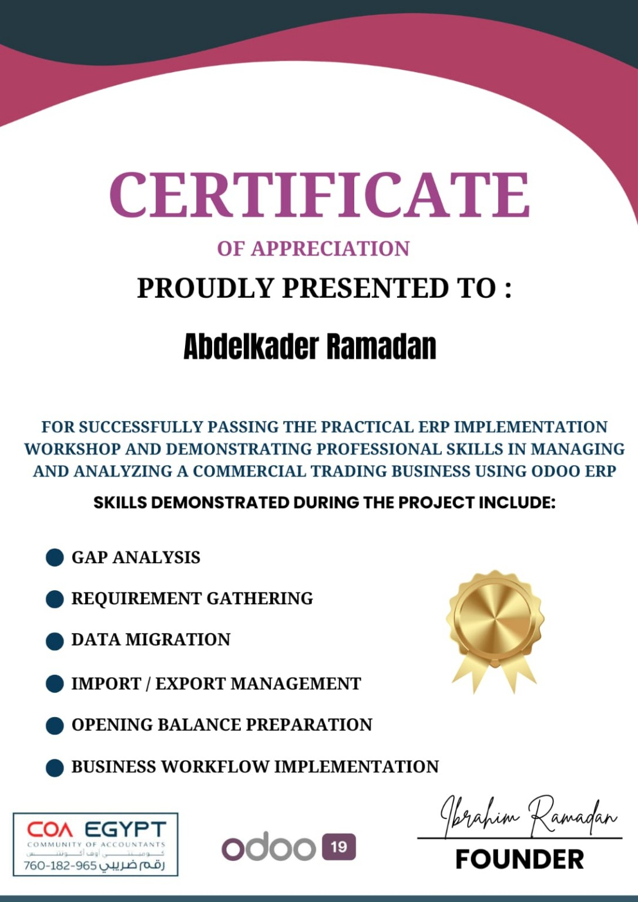

₳
Financial Accounting
Journal entries, account reconciliations, month-end support, supplier payments, customer collections, and financial reporting.
Senior Accountant with nearly 10 years of experience across gas distribution, sweets manufacturing, and restaurants in Egypt and Saudi Arabia. Focused on accounting operations, product costing, reconciliations, VAT, Zakat, and Odoo ERP process improvement.
My work combines day-to-day accounting discipline with an interest in improving how finance teams use ERP systems. I value clean reconciliations, clear documentation, reliable cost data, and repeatable processes.
Journal entries, account reconciliations, month-end support, supplier payments, customer collections, and financial reporting.
Product costing, inventory movement review, production cost tracking, and support for cost-of-goods-sold analysis.
Odoo workflows, accounting configuration awareness, reporting improvements, and practical automation opportunities.
Skill levels should be adjusted to match your confidence and hands-on experience before publishing.
The examples below describe work areas listed in my CV. Any financial figures shown in the dashboard are illustrative demo figures, not employer data.
A demonstration of how a multi-branch business can structure accounting workflows and improve the consistency of transaction recording.
A product-costing initiative covering 300+ raw materials and finished products: rebuilding raw-material costs, standardising units of measure, validating recipes and consumption rates, and updating costs in Odoo.
Illustrative sample data only — not actual company results. This demonstrates how I present finance metrics for management.
Formal academic qualification.
Kafr El Sheikh University
Training certificates are listed separately from academic education.
COA Egypt • Odoo 19 • 78 hours • September 2026
Course certificate for Odoo application consulting.

COA Egypt • Odoo 19
Practical project skills: gap analysis, requirement gathering, data migration, import/export management, opening balances, and business workflow implementation.
Experience and dates have been aligned to the latest CV files provided. Review once more before public launch.
Manage accounting for four branches, a manufacturing facility and multiple warehouses in Odoo 18; handle month-end closing, reconciliations, delivery-platform settlements, product costing and ZATCA Phase 2 e-invoicing follow-up.
Prepared monthly financial statements and budget variance analysis; handled journal entries, AP/AR, general ledger and bank/supplier/customer reconciliations across cost centres.
Odoo 19 course covering Accounting, Sales, Purchase, Inventory, HR, Manufacturing and Project modules, including chart of accounts design, access rights and workflows.
Open to accounting, cost accounting, and Odoo-related opportunities in Saudi Arabia.
Please verify contact details and add your LinkedIn URL before publishing.